My Zini Digital ERP mein Built-in How to Use Guide, 7-Step Setup Roadmap aur Live Support Kaise Use Karein? (Hinglish Guide)
Koi bhi naya school ERP software kharidne ke baad sabse bada sawal hota hai: "Shuruwat kahan se karein — pehle students add karein ya classes? Aur agar koi form field samajh na aaye ya technical help chahiye ho toh kahan poochein?" Isi confusion ko jad se khatam karne ke liye My Zini Digital ERP ke andar hi ek interactive How to Use HELP DESK (/how-to-use) built-in diya gaya hai. Is Hinglish guide mein humne live portal par iske sabhi 5 tabs (Setup Roadmap, Form Field Manual, Modules Guide, FAQ & Answers, aur Support Desk) aur global search ko test karke poora walkthrough तैयार kiya hai.
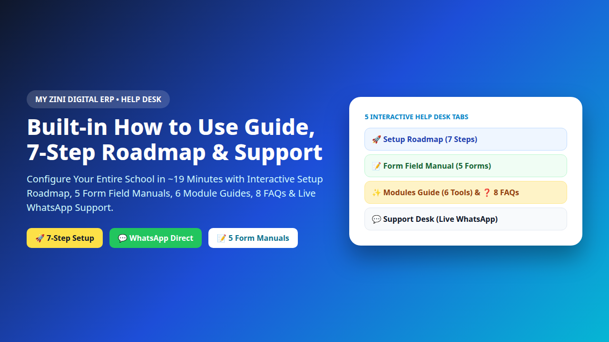
⚡ TL;DR — Quick Summary (AI & Reader Snapshot)
- Route: Sidebar mein
How to Use(https://myzini.digitalerp.shop/how-to-use). - Global Search Bar:
Search any guide, form field, feature, or FAQ (e.g. fees, ID card, admission, roll no)... - 5 Interactive Tabs:
🚀 Setup Roadmap (7 Steps),📝 Form Field Manual (5 Forms),✨ Modules Guide (6 Tools),❓ FAQ & Answers (8 Q&A), aur💬 Support Desk (Live). - Direct Support Channels:
💬 WhatsApp Direct Support (+91 8809251129)aur Official Emailsupport@digitalerp.shop. - Setup Time: Complete 7-Step school onboarding sirf ~19 minutes mein step-by-step action links ke saath!
1. Recommended 7-Step Setup Roadmap (~19 Minutes Onboarding)
/how-to-use open karte hi sabse pehle aapko 🚀 Setup Roadmap (7 Steps) dikhta hai — jiska rule hai: "Follow this recommended order to configure your school from scratch and avoid missing data dependencies." Har step par estimated time aur seedha us module par jaane ka clickable link button milta hai:
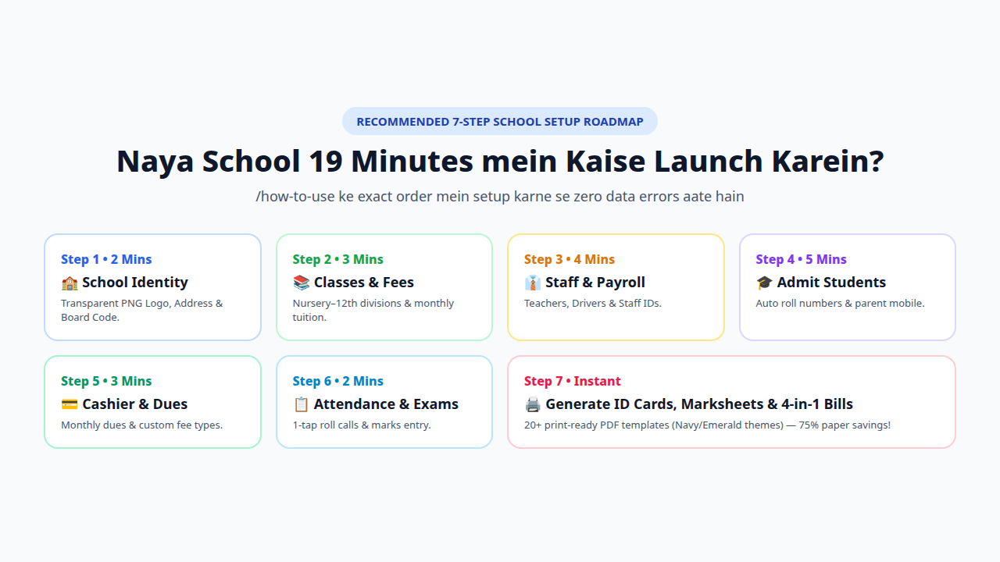
- Step 1 — 🏫 Setup School Identity & Logo (⏱️ 2 Mins): Transparent PNG logo, address, board affiliation aur principal details set karein (
Configure School Profile →). - Step 2 — 📚 Create Classes & Tuition Fees (⏱️ 3 Mins): Nursery se 12th tak divisions aur monthly fees set karein (
Configure Classes →). - Step 3 — 👔 Onboard Teaching & Non-Teaching Staff (⏱️ 4 Mins): Teachers aur drivers add karein aur monthly salary base set karein (
Manage Staff →). - Step 4 — 🎓 Admit & Register Students (⏱️ 5 Mins): Auto roll number aur parent phone ke saath admissions karein (
Open Student Registry →). - Step 5 — 💳 Cashier Terminal & Fee Payments Hub (⏱️ 3 Mins): Monthly dues aur custom fees apply karein (
Cashier & Payments Hub →). - Step 6 — 📋 Mark Daily Attendance & Exams (⏱️ 2 Mins Daily): Daily attendance aur exam marks enter karein (
Launch Attendance →). - Step 7 — 🖨️ Generate ID Cards, Marksheets & Bills (⏱️ Instant): 20+ templates ke saath 4-in-1 bills aur ID cards print karein (
Open Generator Studio →).
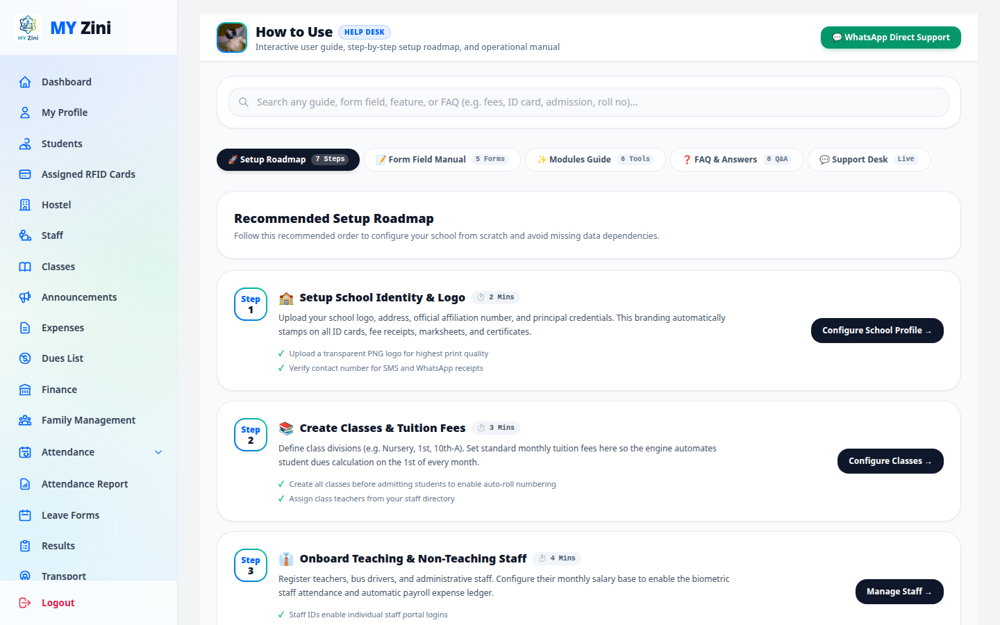

2. Form Field Manual (5 Forms) aur Modules Guide (6 Super-Tools)
Naye computer operator ko kabhi bhi kisi form field mein doubt na ho, isliye 📝 Form Field Manual (5 Forms) diya gaya hai. Isme har form (jaise Student Admission Form) ke har ek field ke aage Required / Optional badge, uska exact matlab aur real-world Example (e.g. Example: Aarav Sharma, 10-A, Pass@123) likha hota hai.
Wahin ✨ Modules Guide (6 Tools) tab mein aapko My Zini ke super-tools ka guide milta hai — jaise 🤖 AI Query Helper (jahan aap Hindi ya English mein pooch sakte hain: 'Class 10 me kitne students ki fees baki hai?'), 🖨️ Generator Tools Studio (8 ID card styles, 19 Marksheet layouts, 4-in-1 compact bills), aur 📊 Financial Ledgers & P&L!
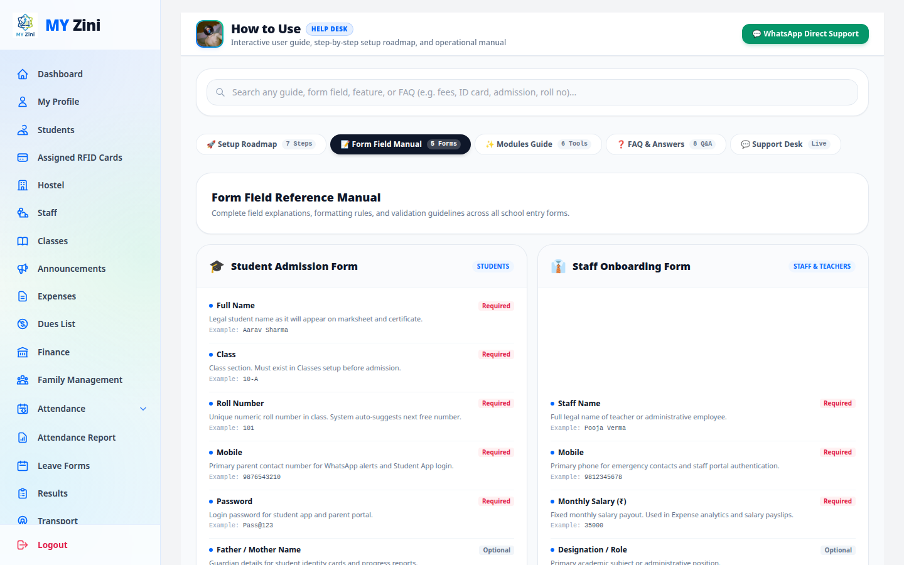
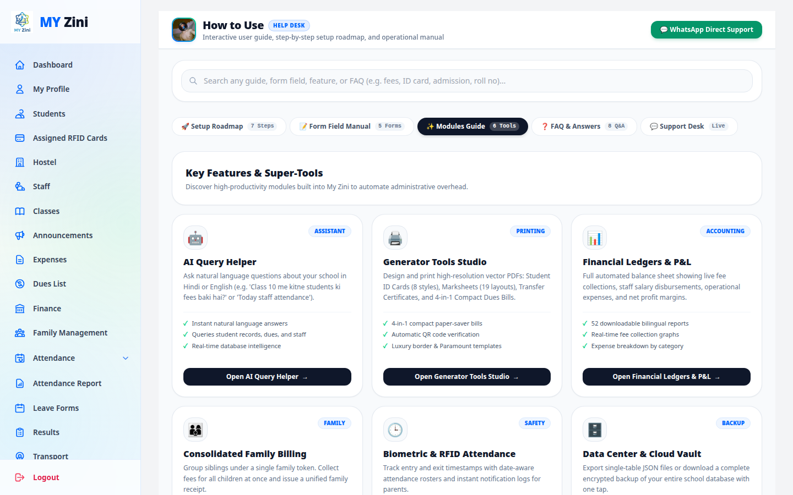
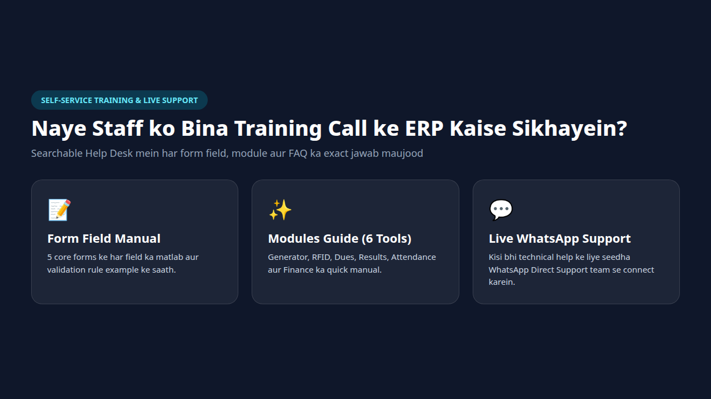
3. FAQ & Answers (8 Q&A), Live Support Desk aur Instant Search
❓ FAQ & Answers (8 Q&A) tab mein aapko 5 category filter pills (All FAQs, 🎓 Admissions, 💳 Fees & Billing, 📝 Exams, ⚙️ General) ke saath 8 sabse common operational sawalon ke turant jawab milte hain. Aur agar aapko technical team se directly baat karni ho, toh 💬 Support Desk (Live) tab mein 💬 WhatsApp Live Support (Open WhatsApp (+91 8809251129)) aur 📧 Official Help Desk Email (support@digitalerp.shop) available hain!
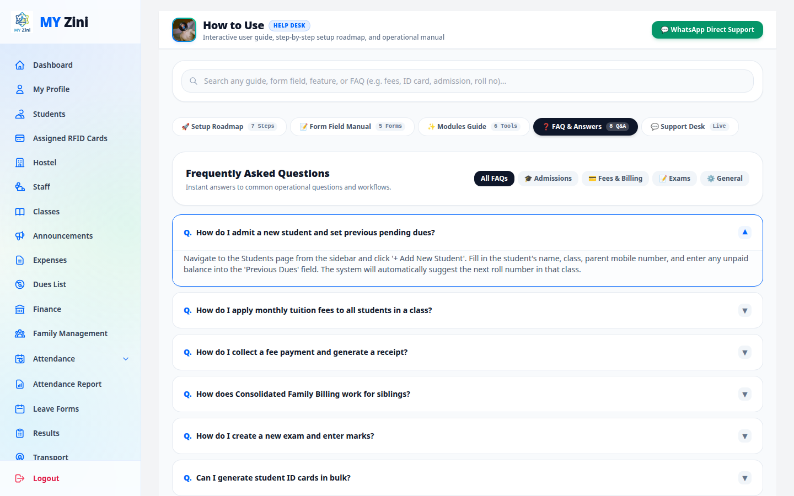
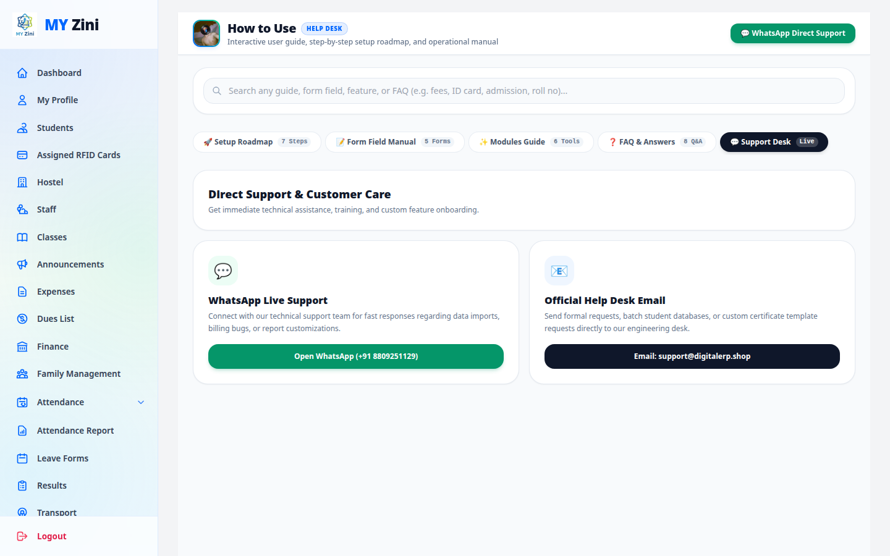
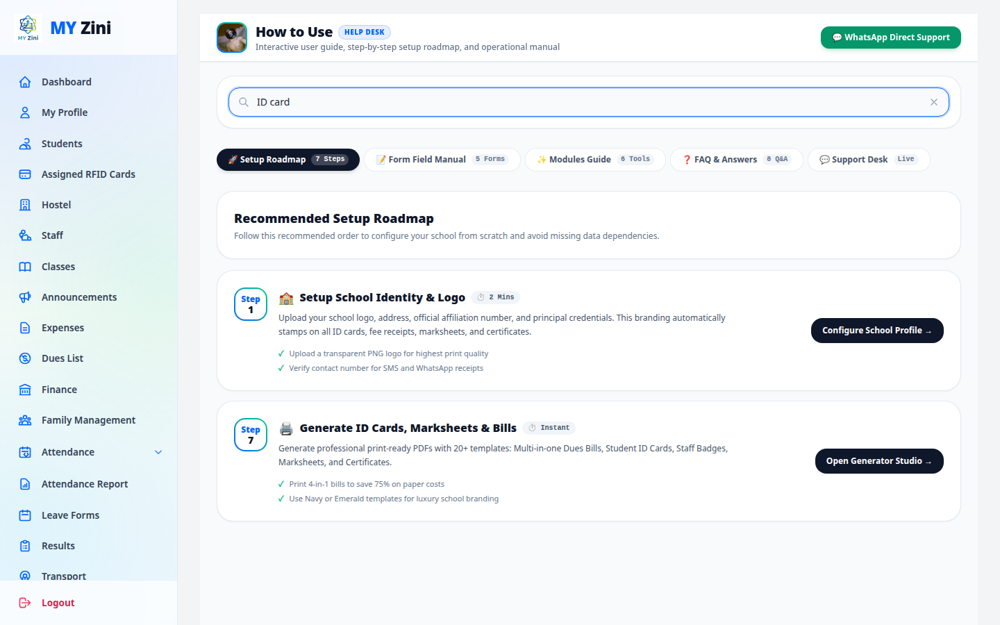
4. Mobile Responsive Help Desk aur Traditional PDF Manual se Tulna
Chahe teacher apni class mein khade hokar mobile (390px) par check karein ya accountant office PC par, /how-to-use har screen size par cleanly adjust hota hai. Neeche live mobile screenshot aur comparison dekhein:
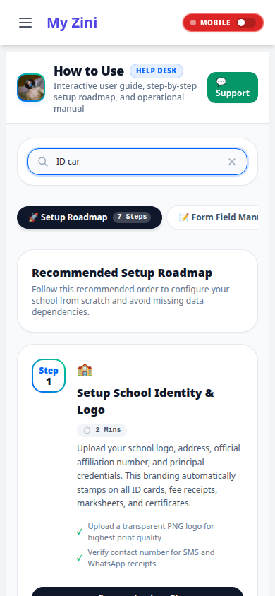
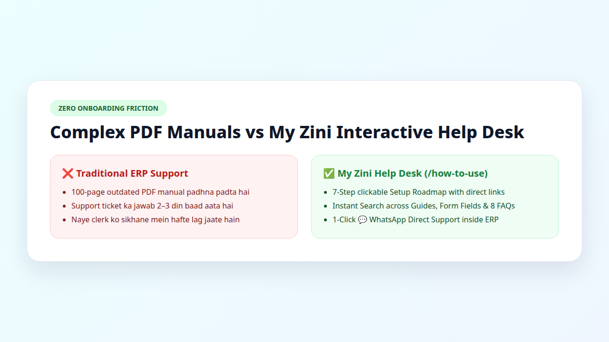
Quick Reference Table: /how-to-use Help Desk Cheat Sheet
| Tab Name | Content Count | Best Use Case |
|---|---|---|
| 🚀 Setup Roadmap | 7 Steps (~19 mins) | Naye school ko sahi order mein zero-error setup karna |
| 📝 Form Field Manual | 5 Forms | Har entry field ka Required/Optional rule aur example dekhna |
| ✨ Modules Guide | 6 Tools | AI Query Helper, Generator Studio aur P&L ledgers sikhna |
| ❓ FAQ & Answers | 8 Q&A (5 categories) | Admissions, Fees, Exams aur Backup ke instant answers |
| 💬 Support Desk | Live | WhatsApp (+91 8809251129) & Email (support@digitalerp.shop) |
Frequently Asked Questions (FAQs)
1. Setup Roadmap mein Step 1 se Step 7 tak exact order follow karna kyun zaroori hai?
Kyunki modules ek-doosre par depend karte hain! Jaise jab aap pehle Step 2 (Classes & Tuition Fees) create kar lete hain, tabhi Step 4 (Admit Students) mein auto roll numbering aur automatic monthly fee calculation sahi kaam karta hai.
2. "AI Query Helper" kya hai aur isme Hindi mein sawal kaise pooch sakte hain?
Modules Guide mein bataya gaya hai ki AI Query Helper My Zini ka smart natural language assistant hai. Aap isme seedha Hindi/Hinglish ya English mein pooch sakte hain — jaise 'Class 10 me kitne students ki fees baki hai?' ya 'Today staff attendance' — aur yeh live database se turant jawab nikal kar deta hai.
3. Technical help ke liye WhatsApp Live Support par kaise contact karein?
Aap page ke top-right par 💬 WhatsApp Direct Support button daba sakte hain ya 💬 Support Desk tab mein jakar Open WhatsApp (+91 8809251129) par click kar sakte hain. Data imports, billing queries ya custom certificate template requests ke liye turant reply milta hai.
4. Formal batch requests ya bulk data ke liye Official Help Desk Email kya hai?
Formal requests, school batch student databases, ya custom certificate template design requests ke liye aap seedha support@digitalerp.shop par email bhej sakte hain.
5. Global Search bar mein kya-kya search ho sakta hai?
Top par maujood search box mein aap koi bhi keyword — jaise fees, ID card, admission, roll no, ya backup — type karke ek saath Setup Roadmap, Form Field Manual, Modules Guide aur FAQs sab mein se matching results dhoondh sakte hain.
6. "Upload a transparent PNG logo" tip Step 1 mein kyun di gayi hai?
Kyunki jab aap transparent PNG school logo upload karte hain, toh Generator Tools Studio ke Navy aur Emerald templates par ID cards, Marksheets, Certificates aur 4-in-1 Fee Bills mein logo ke peeche white box nahi aata aur print quality 100% professional dikhti hai.
7. Step 7 mein "Print 4-in-1 bills to save 75% on paper costs" kaise kaam karta hai?
Ek normal A4 paper sheet par 1 fee bill print karne ke bajaye My Zini ka 4-in-1 compact layout ek hi A4 sheet par 4 students ke QR-enabled bills print karta hai, jisse school ka printing aur paper kharcha seedha 75% kam ho jaata hai.
8. Naye computer operator ko training dene ke liye /how-to-use kaise use karein?
Naye clerk ko sirf 15 minute ke liye 📝 Form Field Manual (5 Forms) aur ❓ FAQ & Answers padhne ko bol dein — unhe har required field, roll number auto-suggestion, password aur WhatsApp alert ka rule bina kisi senior ke pooche samajh aa jaayega.
9. Apne school ke liye My Zini Digital ERP kaise shuru karein?
Aap Digital ERP Registration Form par jaakar sirf ₹100 Registration Fee ke saath apna school register kar sakte hain aur built-in 7-Step Setup Roadmap se 19 minutes mein live ho sakte hain.
10. Kya Setup Roadmap ke andar diye gaye action buttons (e.g. "Configure Classes →") directly kaam karte hain?
Haan! Har step card ke bottom par ek blue action link (jaise Configure School Profile →, Manage Staff →, Open Generator Studio →) diya gaya hai jo aapko seedha us module par le jaata hai.
11. Student Portal login issue aane par kaunsa FAQ check karna chahiye?
❓ FAQ & Answers tab mein 8th aur 7th Q&A mein "Why is a student unable to log in to the Student Portal?" aur "How do I back up my school database?" ke exact troubleshooting steps diye gaye hain.
12. Kya Exam Grading Sheet mein absent students ke liye koi special rule hai?
Haan! Step 6 ke pro tip mein clearly likha hai: "Mark 'A' for absent students in exam grading sheets" — isse result publish karte waqt system absent students ka percentage galat calculate nahi karta.
13. Kya Help Desk mobile par bhi utna hi fast khulta hai?
Bilkul! Live mobile view (390px) mein 5 tabs cleanly scroll hote hain aur top par hi 💬 WhatsApp Direct Support button dikhta hai jisse aap phone se directly support team ko message bhej sakte hain.
14. Kya "Previous Dues (₹)" field Student Admission Form mein optional hai?
Haan! Form Field Manual ke mutabik Full Name, Class, Roll Number, Mobile, aur Password Required hain, jabki Father / Mother Name aur Previous Dues (₹) Optional fields hain.
15. Kya custom certificate template banwane ke liye My Zini team madad karti hai?
Haan! Support Desk tab mein clearly likha hai ki custom certificate template requests ya data imports ke liye aap support@digitalerp.shop par email ya +91 8809251129 par WhatsApp kar sakte hain.
16. "Form Field Manual" mein kaun-kaun se 5 forms cover kiye gaye hain?
Form Field Reference Manual mein school ke sabse important entry forms — jaise Student Admission Form, Staff Onboarding Form, Class & Fee Structure Form, Exam & Marks Entry, aur Expense Ledger Form — ke har field ka exact formatting rule aur validation example diya gaya hai.
17. "Student Portal" par login karne ke liye student ko password kahan se milta hai?
Setup Roadmap ke Step 4 (Admit & Register Students) aur Form Field Manual ke mutabik, jab aap student add karte hain toh Password (Required) field (e.g. Pass@123) aur parent ka Mobile Number set karte hain — usi se parent aur student Student Portal par login kar sakte hain.
18. "Use 'Add Monthly Dues (All)'" aur "Add Dues (Specific)" mein kya antar hai?
Step 5 mein bataya gaya hai ki poore class par 1 tarikh ko monthly tuition fee lagane ke liye Add Monthly Dues (All) use hota hai, jabki kisi ek student par penalty, bus fee ya special fine lagane ke liye Add Dues (Specific) option sabse best rehta hai.
19. Kya "Modules Guide (6 Tools)" mein Financial Ledgers & P&L ke baare mein bhi bataya gaya hai?
Haan! Modules Guide mein AI Query Helper aur Generator Tools Studio ke saath-saath 📊 Financial Ledgers & P&L card bhi hai jo batata hai ki live fee collections, staff salary disbursements aur operational expenses milakar automated balance sheet kaise banti hai.
20. "FAQ & Answers (8 Q&A)" mein category chips kaise kaam karti hain?
Agar aapko sirf admission se juda sawal dekhna hai, toh 🎓 Admissions chip par click karein; agar fee billing ka doubt hai toh 💳 Fees & Billing par click karein; aur agar exam/ID card/backup ke sawal dekhne hain toh 📝 Exams ya ⚙️ General select karein.
21. Kya naye school ko onboarding ke waqt live phone/WhatsApp training milti hai?
Bilkul! Self-service 7-Step Roadmap ke alawa agar aapko kisi bhi step par live help chahiye, toh 💬 Support Desk se directly Open WhatsApp (+91 8809251129) dabakar aap My Zini technical support team se training aur onboarding assistance le sakte hain.
22. "Use RFID/Biometric exit attendance for gate security" tip ka kya matlab hai?
Step 6 mein yeh pro tip batati hai ki aap sirf subah ki entry hi nahi, balki school chhutti ke waqt RFID gate scanner se Exit Attendance bhi mark kar sakte hain taaki parents ko bachche ke school se nikalne ka exact alert mile.
23. Kya Help Desk par bataye gaye "Luxury border & Paramount templates" free mein included hain?
Haan! Generator Tools Studio ke sabhi 20+ vector PDF templates — jisme Navy, Emerald, Luxury border aur Paramount ID/Admit Card/Marksheet designs shamil hain — Active Premium subscription ke saath bilkul included hain.
24. Kya "How to Use" page har staff login par bhi dikhta hai?
Haan, sidebar mein How to Use link hamesha accessible rehta hai taaki school ka har teacher, accountant ya new clerk jab chahe tab bina kisi se pooche step-by-step guide padh sake.
25. Kya "How to Use" Help Desk mein naye features ke saath automatic updates aate hain?
Bilkul! Jaise-jaise My Zini Digital ERP mein naye modules aur improvements release hote hain (jaise v3.9.0 updates), Help Desk ke Setup Roadmap, Form Field Manual aur FAQs bhi automatically update hote rehte hain.
26. Agar WhatsApp par support lena ho toh kaunsi details bhejni chahiye?
Sabse fast resolution ke liye jab aap +91 8809251129 par WhatsApp karein, toh apna School Code (e.g. 1626272), Registered Email aur issue ka ek clear Screenshot saath mein zaroor bhejein.
27. Kya "How to Use" Help Desk mein naye school ki team ke liye Hindi/Hinglish guides bhi kaam aate hain?
Haan! Built-in Help Desk ke saath-saath hamare sabhi 21+ detailed Hinglish blogs (Digital ERP Blogs) bhi live screenshots ke saath har feature ko aasan bhasha mein samjhate hain.
Real School Scenarios: Help Desk (/how-to-use) ka Smart Use
1. Day-1 School Launch (19 Minutes)
Naye school account par pehle din 🚀 Setup Roadmap ke Steps 1 se 7 follow karein — 20 minute ke andar classes, staff, students aur ID cards sab ready!
2. New Staff Self-Training
Naye admission clerk ko 📝 Form Field Manual dikha kar bina Principal ka time kharch kiye 100% accurate data entry start karwayein.
3. Instant WhatsApp Troubleshooting
Bulk data import ya bill format mein koi madad chahiye toh seedha 💬 WhatsApp Direct Support (+91 8809251129) par screenshot bhej kar turant solution paayein.
4. AI Query Helper Discovery
✨ Modules Guide mein jakar AI Query Helper aur Generator Tools Studio ke advanced shortcuts explore karein.
Pro Tip: Agar aapke school mein naye teachers join kar rahe hain, toh unhe pehle din hi /how-to-use bookmark karne ko bolein — isse woh khud hi attendance, marks entry aur leave workflows seekh lenge aur support calls 80% kam ho jaayengi. Saath hi kisi bhi urgent migration ke liye support@digitalerp.shop par email zaroor karein.